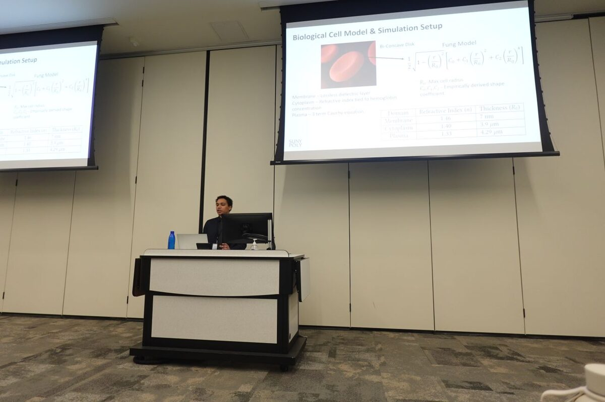

Hunter Hanrahan presents at ACM NanoCom 2026
Undergraduate researcher Hunter Hanrahan presented "Design and Analysis of Wireless Nano-Optical Antennas for Single-Cell Resolution Sensing and Communication" in person at the 13th ACM NanoCom in St. John's, Canada. The paper is co-authored with undergraduate researcher David Serino.
Read paper →